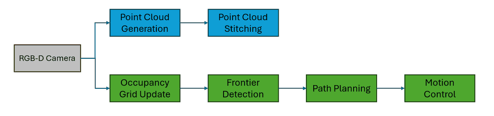
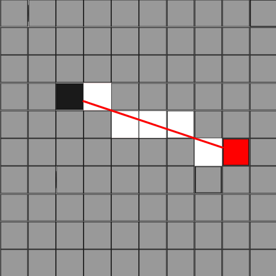
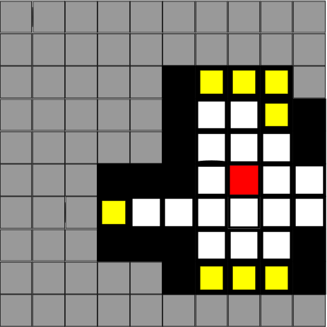
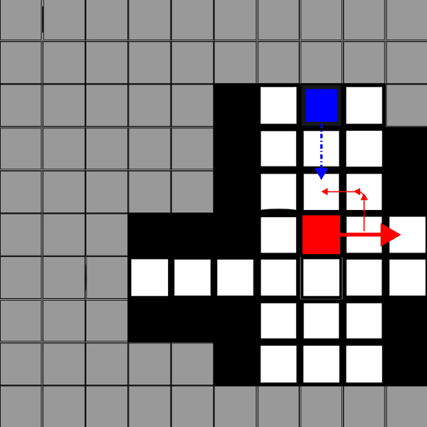
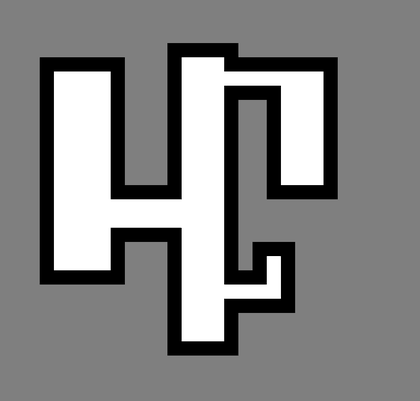
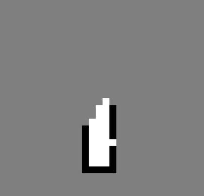
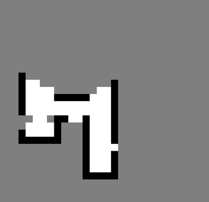
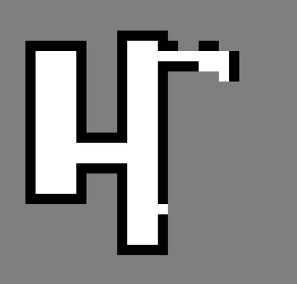
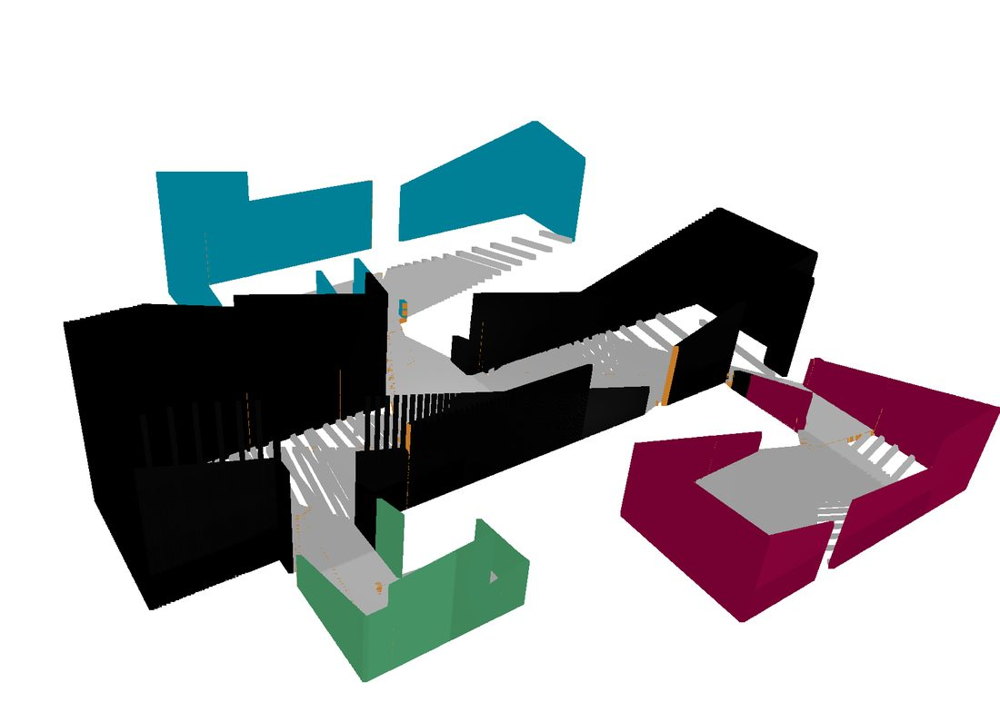
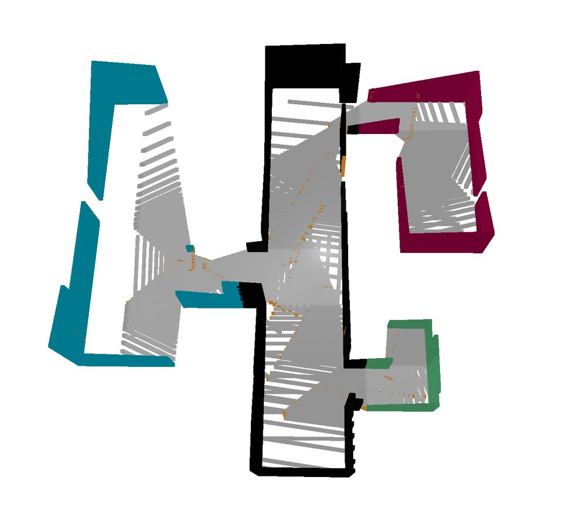

A simulated Roomba is dropped into an indoor space it has never seen, and drives itself until the map is finished.
A three-person course project on indoor SLAM: explore an unknown space, build a map of it, and then plan paths through the map. I built the autonomous side of it — the exploration and control loop that decides where to drive next, and the pipeline that turns RGB-D snapshots into a 3D reconstruction of the room.
The robot gets no floor plan and no waypoints. It starts with a grid of entirely unknown cells, and everything it later knows about the space comes from what it has seen from where it has been.
Perception, mapping, planning and control run as one closed loop, repeating until no unknown space is left to drive towards.



Once a cluster is chosen, A* over the occupancy grid with a Manhattan heuristic produces a path, which is converted into world-space waypoints for the trajectory controller. The robot is a drive agent with two moves, so the controller decides each timestep whether to rotate in place towards the next waypoint or to drive forward, taking its heading from its pose matrix.


Occupancy grids taken at four points during one run. The robot starts knowing nothing, and each snapshot converts a wedge of grey into walls and floor.



Alongside the grid, each snapshot is kept in 3D. A camera-space cloud is built from the depth buffer, masked against the colour image, and moved into world space with the camera pose, rotating and translating every point by p_world = R · p_cam + t. Twenty of those clouds merged together give the reconstruction below.


The artifacts are the honest part: dense layers along the ground from the camera's downward tilt, and gaps where snapshots were taken unevenly. Structurally, though, the merged cloud holds up well enough to infer the floor plan from.
Real time, unedited: the simulator on the left, the occupancy grid on the right, and the terminal reporting each target frontier and the length of the path planned to reach it.